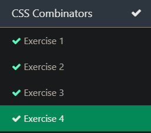

Stephen Port
Home
Site Plan
Chamber
BYU-Idaho
Scripture
WDD 230: Web Frontend Development
Learning Activities
Page Layout Review
Web Design Principles
CSS Media Queries
Design Principles

CSS Pseudo-elements
Information
Weather
Number of Visits